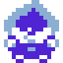

where i can be found
stalk me or something i dunnoim somewhat active on bluesky and reddit, but im mostly active on discord which isnt listed here
check out my youtube :] i post my creations there like music or other stuff whenever i work up the courage to :')
interests and more

currently obsessed with fucking chess of all things 3
games i love: balatro, undertale/deltarune, ultrakill, cult of the lamb, hollow knight, rhythm games,
anomaly games, portal series, minecraft, webfishing and a bunch more stuff
other stuff i like: hfjone, severance, black mirror, windows 7, toki pona (im bad at it), music, art, and movies
random favourite song
originally this was 15 songs in a grid style but it lags and slows shit down soooo heres one random song per reload
i listen to any genre (kinda)! as long as i like it, it's gettin added to my playlist
i find myself listening to a lot of vgm/breakcore a lot more often, so i guess i have a preference
feel free to recommend me songs :D dunno how though.. github pages doesnt allow that i dont
i dont update this site often, so right now there are about uhhh... songs in there and i last edited this on some random day (i forgot)!
incredibox: kommix
incredibox mod on scratch
this is a small project made on scratch about an incredibox mod (using a template, im not that smart)
it's pretty much dedicated to my friends as nearly all (some are my ocs) of the characters you see there are them!
excuse the jank, it was my first time doing something on scratch + i also have never played incredibox LMFAO
sequel once undertale hard mode releases (don't count on it.)
click here for the turbowarp link!
ultrabox samples archive
sample dump for ultrabox, a fork of beepbox
it's a place i made with about 140+ samples for ultrabox's custom samples feature
or any ultrabox fork that has samples enabled, really
if you ever need some quick sounds, grab some from here
features instruments grabbed directly from undertale, sonic, mario64, and more
special thanks to hyphen for using them and contributing too :]
updates whenever i feel like it™
friday night funkin stuff
i mod friday night funkin for fun! well, used to mod. gettin tired of it nowadays, and the brainrot just isnt hitting the same anymore
here are my own mods which i've created solo or had help with! mods where i had a major role are also listed :]
play them if you want, especially funkinosc v2! (if its even listed here...) ive spent the majority of my modding time there
(playing them is very much appreciated actually because ive spent a lot of time on these im just tryna avoid looking desperate 💔)
oh, and heres a subreddit art collab
i participated in! i am the artist of Static, sadly that account got deleted...
more info:
i use fl studio for my music (older songs on fl mobile)! they're listenable, at the very least...
most of my animations were made in flipaclip, some on adobe flash cs6
id say my skills on fnf lua is... acceptable. source code however, absolutely the hell not
my chart is playable :thumbsup:
i mainly draw on krita! its free and open source, check it out
i'd say im a jack of all trades, master of none! i know how to do all of them, but not exceptionally well
unless you're my friend, please dont ask me to work on your fnf mod :')
though i can help out a little, like making chromatics or covers
im geniunely tired of modding unless im having fun of course
i am extremely unreliable as i also struggle with talking to people so yeah